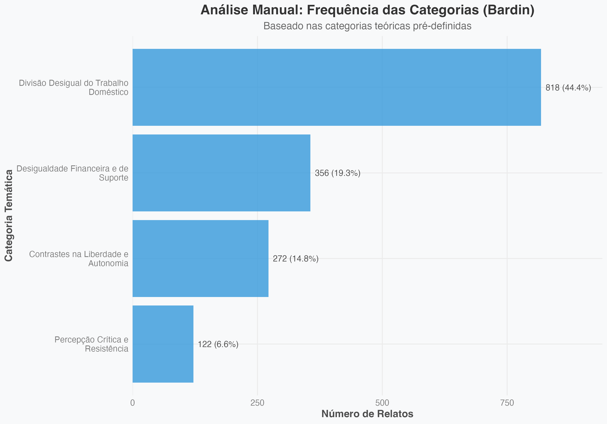
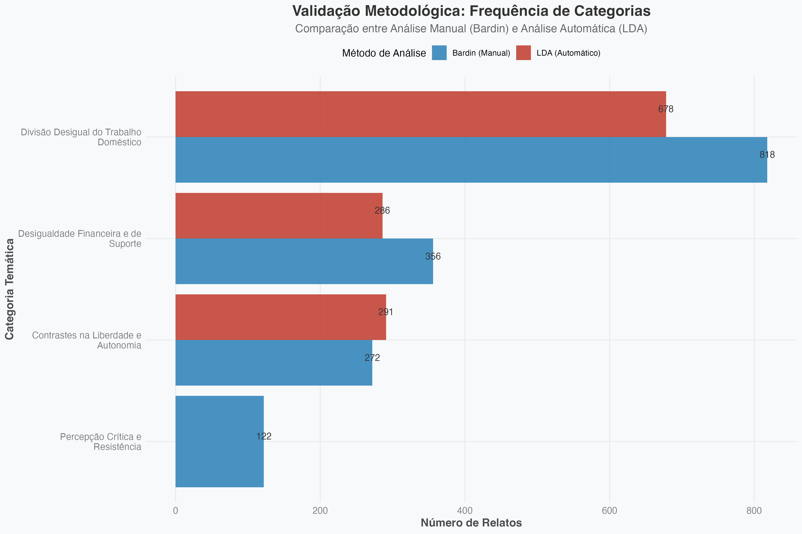
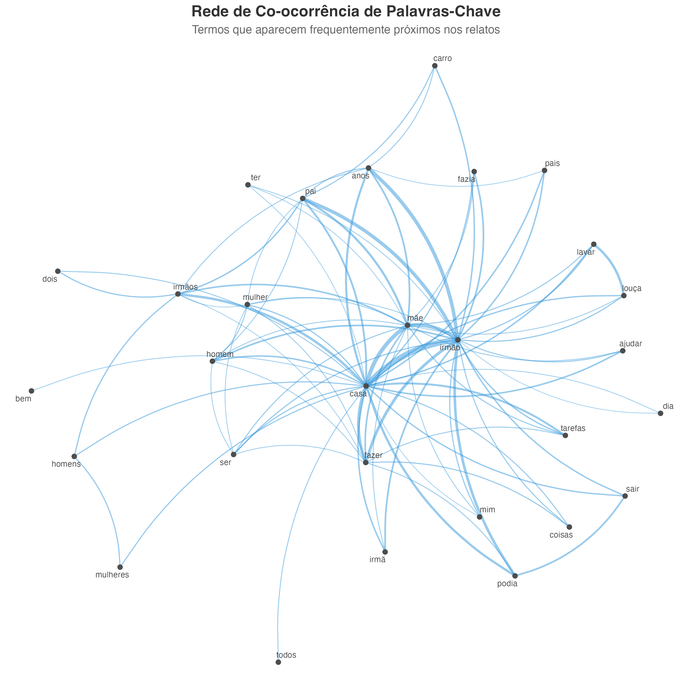

"Costume de Casa Vai à Praça": A Reprodução de Estereótipos e do Sexismo no Cotidiano Familiar
Um estudo sobre a desigualdade de gênero na educação intrafamiliar
por Heloisa Diniz Ferreira
Universidade Federal de Campina Grande (UFCG) - 2025
Resumo
Este trabalho objetivou analisar os sentidos atribuídos por mulheres às experiências de preterição e desigualdade de gênero vividas na infância e adolescência no âmbito familiar. A partir da coleta e análise de 1.215 comentários de uma postagem no Instagram, utilizou-se uma metodologia híbrida que combina a Análise de Conteúdo de Bardin com técnicas computacionais de Processamento de Linguagem Natural, como a Modelagem de Tópicos (LDA). A análise revelou quatro categorias temáticas centrais: (1) Divisão desigual do trabalho doméstico, (2) Desigualdade financeira no suporte familiar, (3) Contrastes na liberdade e autonomia, e (4) Percepção crítica e resistência. Os resultados evidenciam a perpetuação de assimetrias de gênero no espaço intrafamiliar, validando os padrões tanto pela análise qualitativa quanto pela quantitativa.
Metodologia em Resumo
Coleta e Filtragem de Dados
Os dados foram coletados de forma semi-manual a partir de uma postagem pública no Instagram. Após a extração de 1.496 comentários, foi aplicado um filtro para garantir a relevância dos relatos: foram mantidos apenas comentários com mais de 15 caracteres e que continham palavras-chave relacionadas ao contexto familiar. O corpus final para análise foi consolidado em **1.215 comentários**.
Análise Híbrida
Utilizou-se uma abordagem que combina duas técnicas:
- Análise de Conteúdo (Bardin): Definição de 4 categorias temáticas a priori, com base no referencial teórico, para classificar os comentários.
- Modelagem de Tópicos (LDA): Uso de um algoritmo não supervisionado para identificar 4 tópicos estatísticos emergentes do texto, servindo como validação para as categorias manuais.
Resultados Visuais da Análise
Frequência das Categorias (Bardin)
A divisão de tarefas domésticas é a desigualdade mais relatada, correspondendo a 44.4% das ocorrências.
Validação Metodológica (Bardin vs. LDA)
A análise automática (vermelho) valida a distribuição encontrada na análise manual (azul), reforçando a robustez dos temas.
Expressões Comuns por Categoria

Bigramas como "podia sair" e "tarefas domésticas" revelam as narrativas centrais de cada tema.
Rede de Palavras-Chave
A palavra "irmão" funciona como o nó central que conecta as diferentes esferas da desigualdade percebida.
Nuvem de Palavras Interativa (Categoria Principal)
Visualização das palavras mais frequentes na categoria "Divisão Desigual do Trabalho Doméstico". Passe o mouse sobre as palavras para ver a frequência.